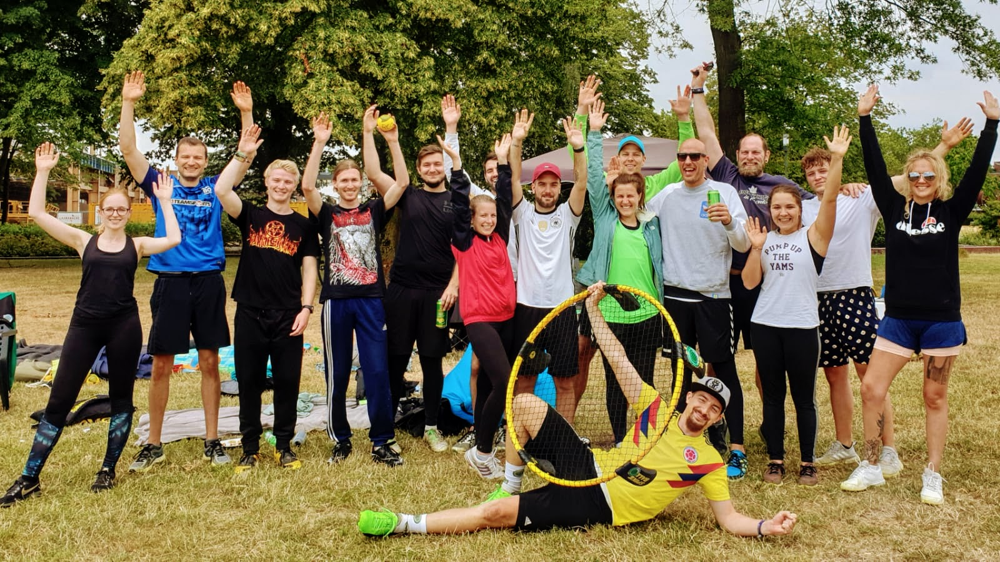

- local_grocery_storeShop
- home#nurderRCO
- infoÜber Roundnet
- groupÜber uns
- sports_handballSpiel mit uns
- emailSchreib uns
- RG Player Zone
Herzlich willkommen auf der Homepage des 1. Roundnetclub Opladen
Über Roundnetkeyboard_arrow_up
Was ist das eigentlich genau, dieses Roundnet?
Roundnet (dem ein oder anderen vielleicht auch unter dem Herstellernamen Spikeball bekannt) ist eine immer noch junge Sportart, die sich in Deutschland, Europa und der ganzen Welt immer weiter ausbreitet.Zum Spielen braucht man nicht viel: Ein Netz, einen Ball und vier Leute um das Netz herum, die dem Ball hinterhergucken - schon kann der Spaß losgehen. Das macht es zum perfekten Spiel für einen Abend im Park, einen Samstag in der Sporthalle, einen Urlaubstag am Strand, oder kurz gesagt zum perfekten Spiel. Gespielt wird zwei gegen zwei mit maximal drei Ballkontakten pro Team, ähnlich wie beim Volleyball. Es dauert nicht lange das Spiel zu lernen, doch es erfordert viel Training und Einsatz um es zu meistern, also genau wie Schach, nur ohne Würfel.
Über unskeyboard_arrow_up

Wer ist das eigentlich genau, dieser RCO?
Wir sind eine Handvoll roundnetbegeisterte Leverkusener, die sich gedacht haben bei jeder Gelegenheit Roundnet zu zocken ist ja schön und gut, aber wir sind hier immer noch in Deutschland, da sollte man mindestens einmal im Leben einen Verein gründen.Gesagt, getan - und am 05.10.2018 hat der erste, beste und einzige Leverkusener Roundnetverein, der 1. Roundnetclub Opladen oder auch kurz der RCO, das Licht der Welt erblickt.
Seitdem zocken wir nicht mehr nur mit einem Bierchen und Musik in der heimischen opladener Bahnstadt, sondern sind auch
bei Turnieren in der ganzen Republik und darüber hinaus anzutreffen (auch ab und zu mit Bierchen).
Sportlich gesehen oft eher semierfolgreich,
dafür immer mit jeder Menge Spaß mit vielen anderen tollen Clubs und Communities aus ganz Europa.
Der Grand Slam in Belgien, die Paulaner Beach Days, die deutsche Meisterschaft in Freiburg und natürlich die Europameisterschaft in Köln waren nur einige Highlights im letzten Jahr, zu denen hoffentlich noch viele weitere hinzukommen werden.
Der Grand Slam in Belgien, die Paulaner Beach Days, die deutsche Meisterschaft in Freiburg und natürlich die Europameisterschaft in Köln waren nur einige Highlights im letzten Jahr, zu denen hoffentlich noch viele weitere hinzukommen werden.
Ach ja, außerdem haben wir Roundnet-Gifs, Virtual Roundnet und den Invisible-Cut-Serve (man sieht den Cut nicht) erfunden.
Schau dich auch gerne mal bei uns (oder allen anderen) in der Roundnet Germany Player Zone um.

Spiel mit unskeyboard_arrow_up
Kann man bei diesem RCO eigentlich auch mal mitspielen?
Auf jeden Fall! Wenn du aus Leverkusen oder Umgebung kommst und Lust hast zu spiken sind wir die richtige Adresse. Egal ob jung oder nicht mehr ganz so jung, egal ob du die sehr gute Sportart Roundnet zum ersten Mal ausprobieren willst oder dein Cut-Serve schon besser schneidet als der Nicer Dicer, wir freuen uns über jeden der bei uns mitzocken will. Wir spielen dienstags abends von 20-22 Uhr in der Halle vom Landrat-Lucas-Gymnasium in Opladen und immer wenn es das Wetter zulässt in der opladener Bahnstadt. Schreib uns einfach kurz an und komm vorbei!
Nichts anzuziehen?
Dann schau doch mal in unserem nagelneuen local_grocery_storeShop vorbei, wir verzichten hier freundlicherweise darauf ihn den "Op-Laden" zu nennen. Ob Shirt, Hoody, Pulli oder auch mal ne Tasse, wir haben diverse sehr gute Motive am Start, die auch von Experten wie den Cracks von Roundnet Germany gerne getragen werden.Schreib unskeyboard_arrow_up
Wie kann man euch denn kontaktieren?
Wir sind natürlich auf diversen Plattformen im Internet vertreten (Social Media, wie wir jungen Kids sagen) und zum Beispiel folgendermaßen zu erreichen:
Impressum - #nurderrco - 2020